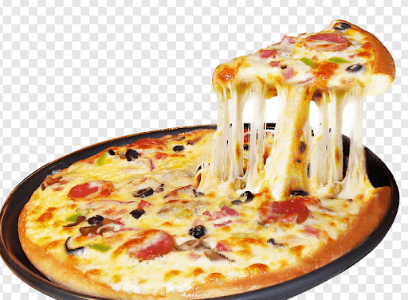

Cheese Pizza

Ingredients
- 1 cup warm tap water 1 package dry yeast
- 4 to 5 Tbs cornmeal
- 4 1/2 Tbs olive oil
- 1 tsp salt, plus more for sprinkling
- 2 1/2 cups all-purpose flour, plus more for kneading
- 4 cups shredded mozzarella cheese
- 4 large tomatoes, cored and thinly sliced
- 2 Tbs grated Parmesan cheese Freshly ground pepper, to taste fresh basil leaves
Procedure
-
STEP 1
The warm water must be between 115°F and 125°F. Use the thermometer to check the temperature. Pour the water into the largebowl. Sprinkle the yeast over the water and let stand until the yeast becomes foamy, about 5 minutes. -
STEP 2
Add 3 tablespoons of the cornmeal, 2 tablespoons of the olive oil, teaspoon salt, and 1/2 cup of the flour to the bowl with the yeast. Mix the dough Using the wooden spoon, beat until the mixture is smooth. Add the remaining flour, 1/2 cup at a time, beating after each addition, until a soft dough forms. Sprinkle a work surface lightly with a little flour. Tip the dough out of the bowl onto the surface and get ready to knead.